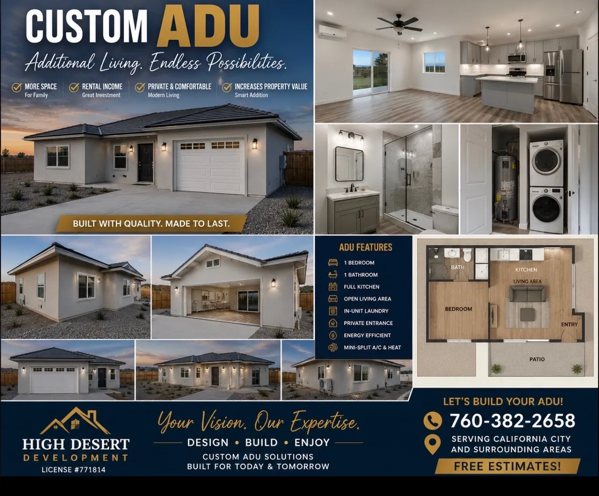
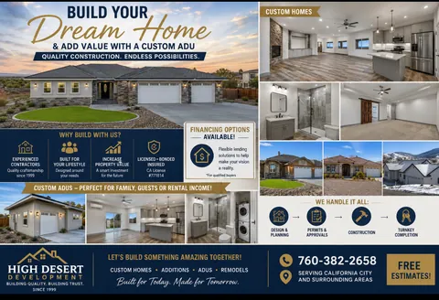

High Desert Development
Custom ADU Construction
Accessory dwelling units and pool houses across the Antelope Valley and the High Desert. Added living space, added value, and a second address on the same lot.
Plain answer
What an ADU actually is
ADU stands for accessory dwelling unit. It is a second, self-contained home on the same lot as a house that is already there. California defines it as a dwelling with complete independent living facilities, meaning permanent provisions for living, sleeping, eating, cooking and sanitation.
You may know it under an older name. Granny flat, in-law unit, casita, backyard cottage and second unit all describe the same thing.
The kitchen is what makes it one. A guest room with its own bathroom is an addition to your house. Put permanent cooking provisions in it and it becomes a dwelling in its own right, which is a different thing to design and a different thing to permit.
Attached, detached or converted. A separate building out in the yard, an addition joined onto the house, or a garage turned into living space. All three are ADUs.
A junior ADU is the smaller category. No more than 500 square feet, contained entirely within the walls of the existing house, and it can either have its own bathroom or share the one already there.
What size, setbacks and parking your particular lot allows comes down to the jurisdiction it sits in, and those rules have changed repeatedly over the last few years. That is worth asking about your own address rather than taking a general answer for.
What it actually takes
The building is the part everybody plans for
An ADU is a second dwelling, and a second dwelling needs its own water, its own wastewater and its own power. That work happens below ground and behind walls, it rarely appears in anybody's inspiration photos, and it is where ADU projects get held up.
Wastewater is the big one. If the property is on a sewer main this is a connection. If it is on septic, and a great many High Desert properties are, adding a second dwelling can mean the existing system has to be enlarged or replaced, because these systems are sized for what the property holds. That is established with a percolation test and the local rules, and it is far better known before the design is drawn than after.
Then power. A second dwelling may need the main panel upgraded, and the run out to a detached unit has to be trenched and inspected like any other service.
Then water. A connection if there is a main, a question about capacity if the property is on a well.
Underground utilities, septic and wells are the work this company does most of. On an ADU that means the answer to the expensive question comes from the people who would be digging, at the point where it is still cheap to change the plan.
How it goes
Design and planning, then permits and approvals, then construction, then handing you the keys. The middle step is the one that surprises people: plans and approvals routinely take longer than the building does, so the useful thing is to start that clock early rather than treat it as a formality.
All four steps are handled here rather than passed between a designer, an expediter and a builder who have never met.
What people build them for
A parent who should not be living alone any more. An adult child who cannot afford to move out yet. Guests who currently take the couch. A home office with a door that actually closes. Rental income, where the jurisdiction allows it.
The building is much the same in each case. What changes is the layout, and it is worth being honest at the start about which one it is, because a unit built for a parent and a unit built to rent are not the same unit.
Project gallery
Custom ADU projects in the High Desert
High Desert Development builds custom accessory dwelling units for homeowners in California City and surrounding High Desert communities. An ADU can create flexible space for extended family, guests, a private office, or independent living while adding long-term usefulness to a property.
This gallery highlights completed detached ADU construction and backyard additions designed to complement the main residence and the needs of each homeowner.
Construction financing is available. A build does not have to wait until the full amount is saved. Ask about financing when you call and we will explain how it works, with no obligation.

Printed sheets
The dream home and ADU sheet
A custom home with an ADU alongside it, on one page. Design and planning, permits and approvals, construction and completion, all handled in house.
{kind=link}

Add the second home
See what an ADU takes on your property
Setbacks, utilities and access decide most of it, and all three can be checked before you spend anything on plans.